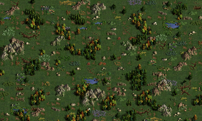
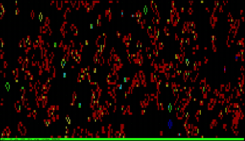
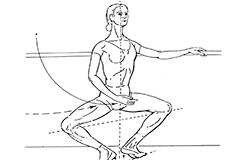
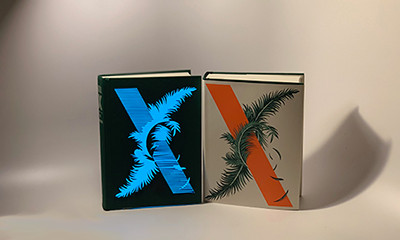

(click here for my bio)
Maxwell Neely-Cohen’s work has spanned writing, sound, performance, movement, and technology. He has been a fellow at the Library Innovation Lab at Harvard Law School, an artist-in-residence at CultureHub, Pioneer Works, and Seoul Institute of the Arts, and a Webby and Tiny Award nominee. His nonfiction and essays have appeared in places like The New Republic, SSENSE, and BOMB Magazine. He is currently the publisher of The HTML Review and a consulting dramaturg for the New York Choreographic Institute at New York City Ballet.(click here for some of what I've been up to)
Writing
-
 Dancing About Architecture interview
Dancing About Architecture interview -
 Generational Data Interviews interview
Generational Data Interviews interview -
 Century-Scale Storage essay
Century-Scale Storage essay -
 Our Symphony dialogue
Our Symphony dialogue -
 Archive and Survive essay
Archive and Survive essay -

-

-
 All Under One Roof With CW&T interview
All Under One Roof With CW&T interview -
 The Chromatic Trip review
The Chromatic Trip review -

-

-

-
 Brand Anorexia review
Brand Anorexia review -
 Everybody's Doing It essay
Everybody's Doing It essay -
 Echo of the Boom novel
Echo of the Boom novel
Performance, Movement, and Dramaturgy
-
 Institute Institute organizer
Institute Institute organizer -
 "Vestige" dramaturg
"Vestige" dramaturg -
 "Castle Door" producer
"Castle Door" producer -
 "A Solo Piano" dramaturg
"A Solo Piano" dramaturg -
 "Cloud Variations" co-sound designer
"Cloud Variations" co-sound designer -
 "Vanishing Point" dramaturg
"Vanishing Point" dramaturg -

-
 "Bikini" co-sound designer and composer
"Bikini" co-sound designer and composer -
 "Invasive Species" co-sound designer and composer
"Invasive Species" co-sound designer and composer -
 "Job" co-sound designer
"Job" co-sound designer -

-

Experiments
-

-

-

-

-

-

-

-

-

-

Personal Archives, Libraries, and Journals
-
 Digital closet (inspired by Clueless)
Digital closet (inspired by Clueless) -

-

-